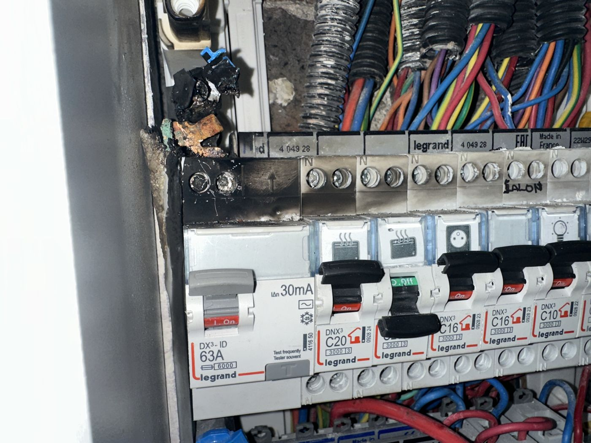
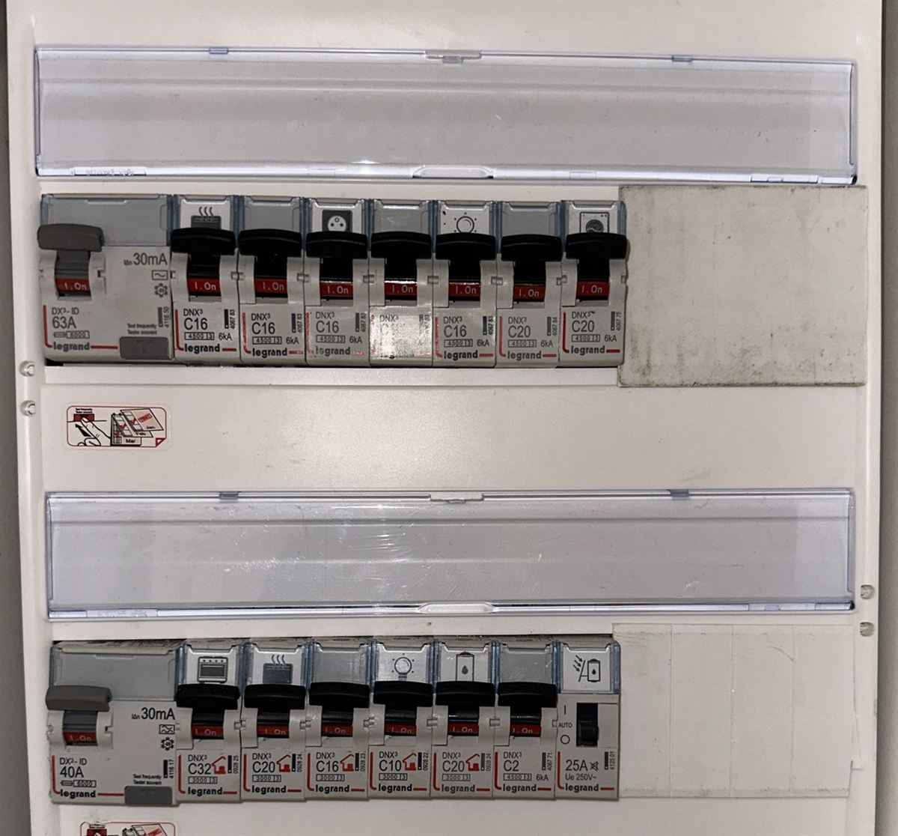
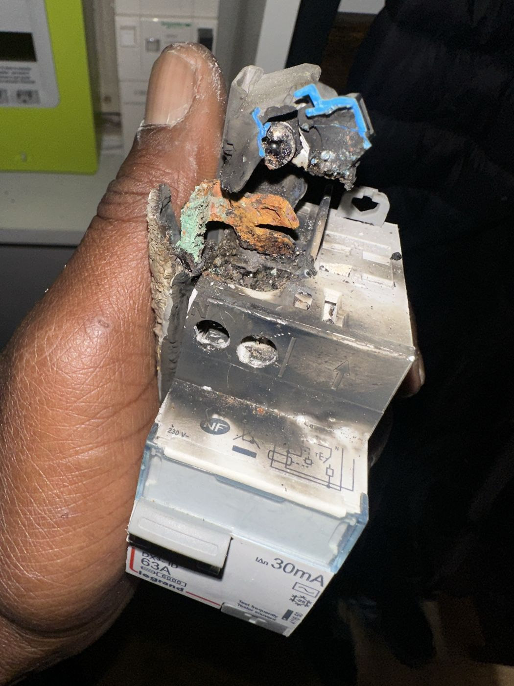
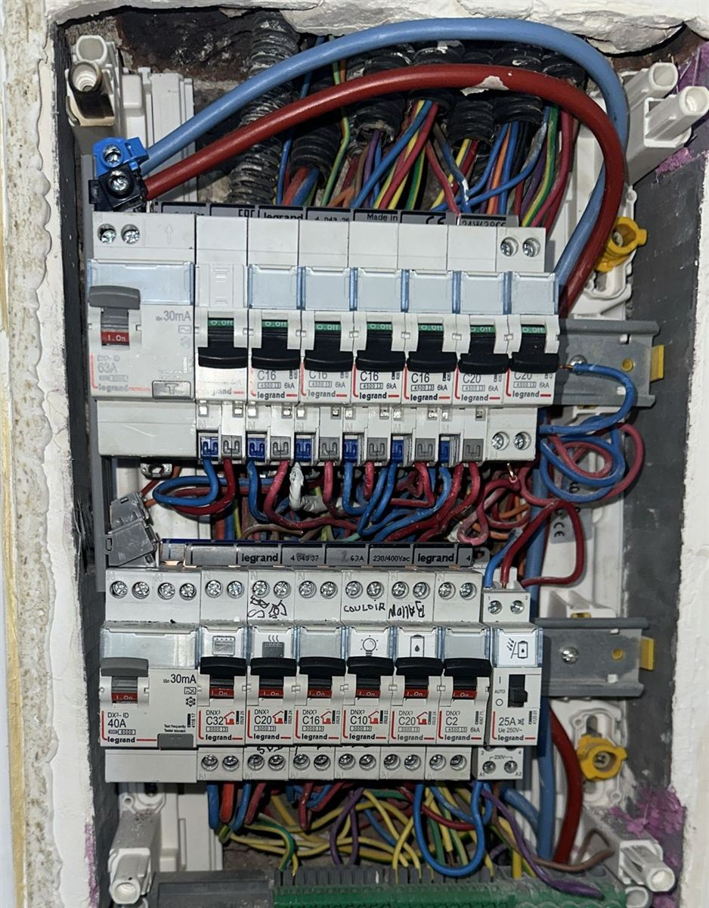

Électricien à Paris 20e — Dépannage 24h/24
SINELEC intervient dans le 20e arrondissement (Gambetta, Belleville, Ménilmontant, Saint-Fargeau, Porte de Bagnolet) et dans tout Paris pour vos urgences électriques, remplacements de tableau et mises aux normes NF C 15-100. Déjà intervenu sur place : interrupteur différentiel brûlé remplacé avec toute sa rangée. Déplacement 65€ TTC, prix fixes affichés, garantie décennale ORUS.
Sur mobile : appui direct pour appelerUn chantier récent à Paris 20e : différentiel brûlé


Le client nous a écrit un soir via le formulaire du site : « un des disjoncteurs différentiels du tableau ne s'enclenche plus, même quand tout est coupé ». Sur place, l'explication était visible dès l'ouverture du capot : la borne d'arrivée de l'interrupteur différentiel 63 A avait fondu, le conducteur d'alimentation était oxydé (vert-de-gris, rouille) et la suie avait noirci les disjoncteurs voisins. Une connexion qui chauffe pendant des mois finit par carboniser l'appareil — et un différentiel bloqué ne protège plus personne.


Le reste du tableau étant sain, pas besoin de tout refaire. Nous avons remplacé toute la rangée touchée :
- Nouvel interrupteur différentiel Legrand 63 A 30 mA
- Disjoncteurs de la rangée remplacés (circuits 16 A et 20 A), peigne neuf
- Conducteurs d'arrivée refaits, bornes serrées au couple
- Contrôle des autres rangées et test du différentiel avant remise sous tension
Un différentiel qui ne se réarme plus, une odeur de chaud ou des traces noires dans le tableau ? Ne forcez pas le levier : coupez le disjoncteur général et appelez.
Notre guide différentiel qui ne se réarme plus : causes et que faire détaille les vérifications possibles sans risque et les causes les plus fréquentes.
Nos forfaits à Paris 20e
Questions fréquentes — Paris 20e
Q. Combien coûte le déplacement de SINELEC à Paris 20e ?
65€ TTC.
Q. SINELEC est-il déjà intervenu à Paris 20e ?
Oui : rénovation complète de tableau électrique.
Q. Pourquoi mon disjoncteur différentiel ne se réenclenche plus ?
S'il refuse de se réarmer même circuits coupés, l'appareil lui-même est souvent endommagé : borne qui a chauffé, mécanisme bloqué ou défaut interne. Il faut le faire contrôler rapidement : un différentiel hors service ne protège plus contre l'électrocution.
Q. Intervenez-vous en urgence à Paris 20e ?
Oui, 24h/24 et 7j/7. Le délai est confirmé par téléphone avant chaque déplacement.